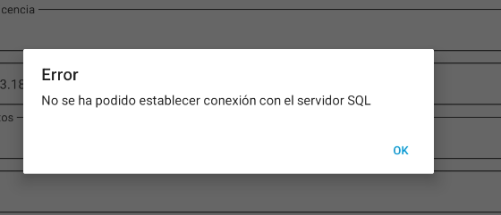

Posibles errores
1. Errores y soluciones
1.1. Error de conexión al servidor y base de datos
Descripción del error:
Al intentar seleccionar la base de datos en ENBLAU, aparece un mensaje de error cuando no se encuentra el servidor o la instancia.
Este problema puede deberse a bloqueos por parte del antivirus o firewall en el servidor donde se ejecuta ENBLAU.

Solución:
Revisar las reglas y excepciones del antivirus o firewall en el servidor. Ejemplo:
- Desde el Firewall Configuración avanzada - Reglas de entrada verificar que los puertos 1433 TCP (puerto estándar de SQL Server) y 1434 UDP (para descubrimiento de instancia) estén habilitados:

- Desde Sql Server Configuration Manager verificar si la instancia ENDADES2022 tiene el TCP/IP habilitado:

ℹ️ Nota: Para más detalles, consulta la sección 2. Ajustes del antivirus y firewall en la guía de Configuración del Sistema.
Una vez revisado acceder a enCONNECT y seleccionar el servidor y la base de datos.
1.2. Error de conexión a fábrica
Descripción del error:
Al intentar conectarse a fábrica, aparece un error indicando que la ruta de ejecución para conectar con Logikal no está definida correctamente.

Solución:
Verifica que la ruta de la aplicación Logikal sea la correcta.
- En ENBLAU, dirígete a:
General → Logikal - Conexión y Proyectos.


1.3. Error de interfaz con ERP Logikal
Descripción del error:
Al intentar conectarse a fábrica (Logikal), se muestra un error indicando que no se encuentra una licencia válida para la interfaz ERP de Logikal.

Solución:
Para establecer la conexión con fábrica, es necesario tener instalado el módulo ERP de Logikal.
Contacta con Orgadata para gestionar la licencia:
- Email: customer.support@orgadata.com
- Llama al técnico responsable de soporte de Logikal.
1.4. Error acceso a fábrica Logikal
Descripción del error:
Al intentar conectarse a fábrica (Logikal), se muestra un error de acceso en la ruta de la carpeta donde está ejecutando Logikal.

Solución:
Para establecer la conexión con fábrica, es necesario tener la carpeta como de confianza. Para eso, desde Windows en el apartado Redes e Internet > Opciones de Internet:

Luego en Propiedades: Internet ir a la pestaña de Seguridad > Intranet local > Sitios > Opciones avanzadas y añadir esos 2 sitios web file://servidor y servidor.

1.5. Error de conexión al servidor desde enSITE
Descripción del error:
Al intentar conectarse al servidor desde la aplicación enSITE (tablet), se muestra un mensaje de error relacionado con la conexión al servidor SQL.


Solución:
-
Verificar la red:
Asegúrate de que la tablet esté conectada a la misma red local que el servidor donde se encuentra la base de datos. -
Revisar el firewall y antivirus:
Comprueba que el firewall y/o antivirus no estén bloqueando la conexión entre el dispositivo y el servidor SQL.
Añade reglas o excepciones si es necesario. -
Verificar configuración de puertos:
Desde el servidor asegúrate de que los puertos utilizados por SQL Server estén habilitados, incluyendo:-
1433/TCP (puerto estándar de SQL Server). Verificar y configurar en SQL Server Configuration Manager:
- Ir a SQL Server Network Configuration → Protocols for ENDADES2022.
- En Propiedades de TCP/IP → IP Addresses, verificar que todas las IP's tengan el TCP Port configurados en 1433. Y que los TCP Dynamic Port estén en 0.

-
1434 UDP (para descubrimiento de instancia)
-
ℹ️Nota: Este error es común cuando hay conflictos en la configuración de red o seguridad. Validar todos los puntos anteriores suele resolver el problema.
1.6. Error de archivo
- Descripción del error:
Este error se produce cuando, en determinadas ocasiones, Windows corrompe algunos archivos. Puede estar relacionado con la configuración del sistema operativo.

Solución:
-
Eliminar la carpeta:
Al eliminar la carpeta indicada en la ruta mostrada por el error, el problema queda resuelto.- Cerrar ENBLAU.
- Eliminar la carpeta
C:\Users\User_name\AppData\Local\Endades - Abrir ENBLAU.
1.7. Error de registro de licencia
Descripción del error:
En algunas ocasiones, al abrir ENBLAU, el sistema puede solicitar nuevamente el registro de la licencia.

Las posibles causas son las siguientes:
- ENBLAU está instalado en un servidor y el equipo desde el que se ejecuta accede mediante una unidad de red. La conexión puede haber fallado debido a cambios o actualizaciones en el servidor.
- El equipo desde el que se ejecuta ENBLAU no es visible en la red.
- Existen problemas de permisos sobre la unidad de red.
- Problema con la ip y nombre del servidor en la configuracion de red.
Solución:
-
Verificar que la red esté correctamente configurada y que no exista ningún problema de conectividad.
-
Solucion para el control de licencia de ENBLAU. Configurar correctamente el nombre del servidor y su dirección IP en el archivo hosts de Windows. Esta solución aplica cuando existe una configuración de red incorrecta.
-
Desde el servidor, abrir enUPDATE y sincronizar la opción Licencia y actualizaciones. A continuación, abrir ENBLAU directamente desde el servidor para comprobar que se ejecuta correctamente.

-
Comprobar que la licencia de la aplicación esté al día en cuanto a pagos. La licencia caduca de forma automática, en ese caso, contactar con soporte técnico a través de comercial@endades.com.
⚠️ Importante: Es obligatorio utilizar como mínimo SQL Server 2022 para garantizar la compatibilidad con las versiones de ENBLAU y enSITE.
 Español
Español
 English
English
 Italiano
Italiano
 Português
Português